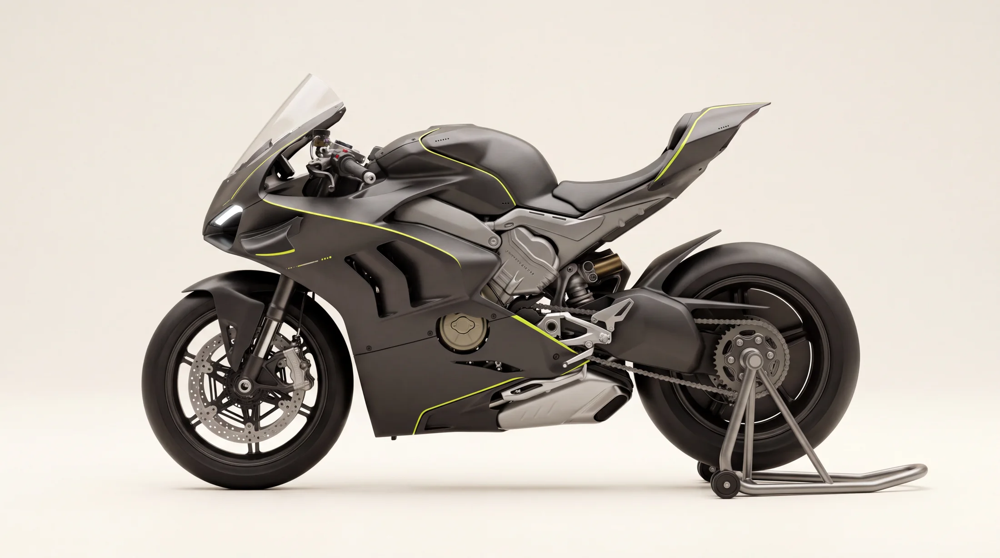

Every marque keeps one machine that never ships — the one on the bench, photographed plainly, argued over daily. This is ours. Touch a marker to read the engineering underneath.

01 Nose & aero
The halo ring sits behind the nose aperture, flanked by winglets sized for real load — 9 kg of downforce at highway speed, pressing the front tyre into the road it is trying to leave. The screen's double bubble is shaped around a tucked helmet, not a brochure.
02 The V4
1090 cc at 65 degrees — narrow enough to keep the machine slim, uneven enough to fire with a gallop instead of a whine. The cases are structural: the engine is a stressed member, and the frame simply borrows it.
03 The spine
One ash-grey casting from steering head to tail. Wall thickness follows the stress map — 7 mm at the head, 2.5 mm where it only carries bodywork. What most marques hide inside a fairing, we polish the mould for.
04 Braking
Twin 330 mm floating discs, radial four-piston calipers, and a lever machined with a deliberate 2 mm of dead travel — the detent that tells your fingers the system is armed. Braking is the conversation; the discs are just the vocabulary.
05 Single-sided swingarm
The rear wheel presented as a full disc — the marque's open-wheel signature. The arm's asymmetric box section carries chain pull on one side and the world's stares on the other. Wheel changes take ninety seconds.